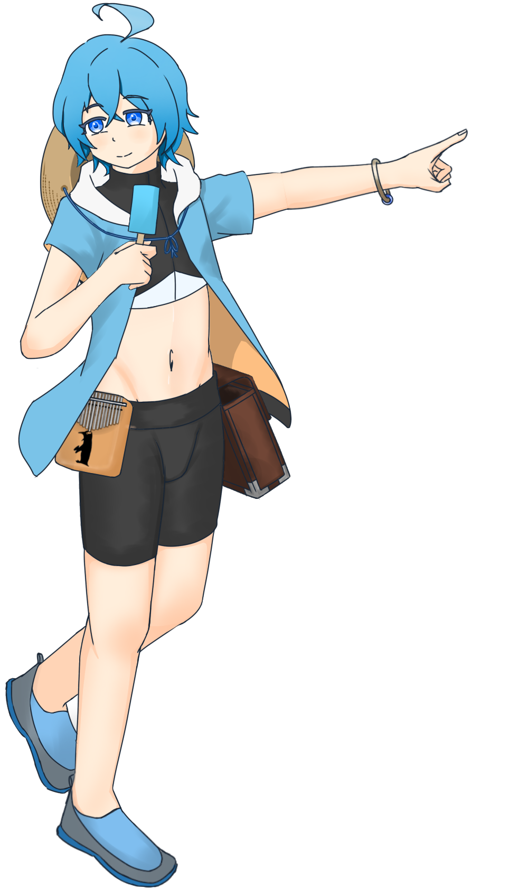

ずっと海が一面に広がっている

HO2- 蓮吟 玄兎
あなたは海に囲まれた島で暮らしている。砂浜に打ち上げられているHO1を発見した。
年齢:15才
誕生日:2月20日
瞳の色:海を写したかのような美しい青い眼
身長:153cm
ステータス
・SAN 70 ・HP 12 ・MP 14 ・DB -1D4
・STR 6 ・CON 14 ・POW 14 ・DEX 16
・APP 11 ・SIZ 10 ・INT 15 ・EDU 12
キャラ駒コピー
カリンバ
細い金属棒を、指で弾いて演奏する楽器。島の木材で手作りした。17音を奏でることができチューニングも自由。スピアガン
木材とモリで手作りした魚獲り用のツール。武器としてステータスを見るなら飛距離の短いクロスボウ
昼花火
カラフルな色のけむりを出す花火。夜に見る一般的な花火(夜花火)ではなく煙を出して楽しむもの。 他にも音を出す花火などがある。色褪せた雑誌
誰が買って置いたのかもよくわからない工作系の雑誌。結構古い木工ナイフ
工作用に持っている好奇心旺盛な男の子。
一人称は僕。海で遊んだり物を作って遊んだりするのが好き。手作りのカリンバを持ち歩いていてたまに演奏している。前に誰が買って置いたのかもよくわからない工作系の雑誌が家の本棚にあり気に入ってよく見ている。
島の名前:田文素伍井島
oooo